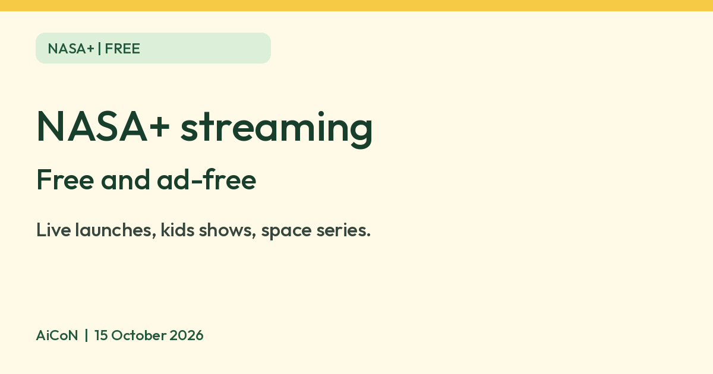

NASA+: free, ad-free space streaming and the NASA App
NASA says NASA+ is a no-cost, ad-free streaming service with live coverage and original series, with no subscription required.

What it is
NASA+ is the US space agency's own streaming service. NASA describes it as "the agency's no cost, ad-free streaming service featuring live coverage and original video series". The NASA App is the free phone and TV app that carries it, along with NASA images, news, podcasts and 3D models of spacecraft. It is not an AI tool. We included it as a free educational goodie from an official source.
Is it free?
Yes. NASA's launch announcement says NASA+ is "no cost, ad-free" and "no subscription required", and that the NASA app "is available at no cost". NASA's Ways to Watch page adds one catch: watching NASA programming on third-party services such as Netflix or Amazon may need a subscription or equipment from that service. NASA's own app and website stay free.
What you can watch and use
- Original series: NASA lists documentaries about James Webb Space Telescope images, animated kids' shows about the planets and the universe, and behind-the-scenes series on missions.
- Live coverage: NASA says it streams launches and other live events.
- Spanish-language content and climate content for kids, per NASA.
- Relaxing space visuals: NASA describes ultra-high-definition views of the cosmos set to music.
- In the app: NASA lists more than 21,000 images, podcasts, news, International Space Station sighting alerts, and augmented reality 3D models of rockets, spacecraft and rovers.
Where it works
- NASA says the NASA App is for iOS, Android, Apple TV, Google/Android TV, Amazon Fire TV and Roku.
- You can also stream online at plus.nasa.gov, per NASA.
- We saw no account or sign-up step mentioned on the pages we read.
What to watch out for
- The catalogue changes. The titles NASA lists on its site today may differ from the launch list above.
- Live schedules on NASA's Live page are shown in US Eastern time, so convert them to India time (IST is 9.5 hours ahead of US Eastern daylight time).
- Streaming uses mobile data. Use Wi-Fi for long videos.
Privacy and data
- NASA's web privacy policy says it temporarily stores technical details of a visit, such as IP address, browser and pages viewed, for site management and security.
- The same policy says NASA sites may use session cookies and, in some cases, persistent cookies, and it describes Google demographic and interest reports.
- We did not read the NASA App's own store privacy listing. Check it in your app store before installing.
India
- NASA's pages do not state country availability, and we did not test from India. Check that the app appears in your Google Play or App Store and that plus.nasa.gov plays on your connection.
Images and media
NASA's media guidelines say NASA content is generally not subject to copyright in the US and may be used for educational or informational purposes with NASA acknowledged as the source. They also say the NASA insignia and logotype are not public domain and are protected by law. This article uses no NASA logo or images.
Frequently asked questions
Is NASA+ free?
Yes. NASA says it is no cost and ad-free, with no subscription required.
Do I need an account?
The pages we read do not mention one.
Is it available in India?
NASA does not say. Check your app store.
Sources: NASA launch announcement, NASA App, Ways to Watch, NASA+, Web privacy policy, Media guidelines. Checked 15 October 2026.
No NASA logo is used in this article. Independent guide, not affiliated.